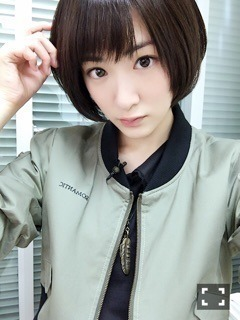

| 2016/04 06 Wed | 経験値が欲しいこの頃。 |
どんどん乃木坂メンバーが凄いことしているから自分のレベルでここに存在していいのかわからなくなるいこまさんですヽ(・∀・)ノ
日々、人間は悩み、
日々、人間は考えが変わりますな〜

昨日はフジテレビさんの直撃！ズキュンワードに出演しましたヽ(・∀・)ノ
ズキュンと聞いて、
私も乃木坂ファンの方も何で真夏じゃないんだろうと疑問に思いました笑
しかし、真夏のズッキュン！要素は無かったですね

テレビの収録は楽しいですが、毎回命がけの勝負です！
大喜利みたいなものだったから、プロの芸人さんに囲まれてちんちくりんな生駒ちゃんがめっさ心臓ドクドク言わせながらやりましたヽ(・∀・)ノ
皆さんどうでしたか？
面白かったですかね？(＾ω＾)
あ、今日のおじゃる丸は17歳になったおじゃる丸が出てくる回だよ〜！
まだ、録画見れてないからあれだけど、
ずっと楽しみにしていたんだ(((o(*ﾟ▽ﾟ*)o)))
あっ(´；ω；｀)
忍たま録画ポチってなかった(´；ω；｀)(´；ω；｀)
アァア

くっそ
くっ
よしっ！
切り替えて！
今夜はナカイの窓に出演しますヽ(・∀・)ノヽ(・∀・)ノ

レジェンドの皆様に囲まれて
最初は仮猫のいこまさんでしたが、
だんだん自分を出せる良い機会になったと思われます！ヽ(・∀・)ノ
スペシャルと延長戦にも映りますので皆さん是非見てくださいねヽ(・∀・)ノヽ(・∀・)ノ
いこまさん、
自分のやりたいこと見つけました！
作品になれたら嬉しいので、ちまちまと始めようと思います(((o(*ﾟ▽ﾟ*)o)))
へばなっ☆彡
コメント(1050)
2016/04/06 19:24